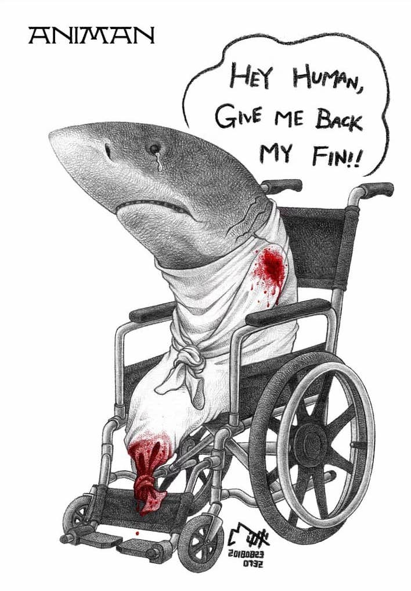

無鰭鯊魚
比起割鰭棄身，台灣漁民習慣從裡到外全隻使用
在台灣，鯊魚全身上下皆可利用，除了廣為人知可加工成為魚翅的魚鰭外，魚牙是珍貴的飾品，魚肝可提煉角鯊烯，魚骨能提煉軟骨素，魚皮魚肉不但可以直接食用，其肉更是魚漿製品的首選，許多魚丸、黑輪、魚板可都有牠的身影，只是你不知道而已。換句話說，保護鯊魚真的不是只有拒吃魚翅就夠了。
至於所謂網路上流傳的割鰭棄身，你看到的沒有魚鰭的鯊魚照，多半是發生在過去台灣遠洋漁業資源豐富，為了能讓冰艙承載更多的高價值魚貨時，漁民為了達到較高的經濟效益才會將鯊魚割鰭後丟棄、放生，導致失去游泳能力的牠只能靜靜在海中漂流不斷失血直至死亡，否則平時台灣沿海漁業與多數國家僅利用魚翅不同，自古捕撈鯊魚就是全隻使用。
你以為沒吃到鯊魚，但其實它常與旗鮪混獲
因為大洋的洄游型鯊魚棲地幾乎與鮪魚、旗魚的漁場重疊，當漁民利用大目流刺網與延繩釣等方式捕獲旗魚、鮪魚和其他高經濟價值魚種時，此時若混獲到鯊魚，幾乎皆難逃一死，即使是活鯊上船，漁民也會為了避免鬆綁鯊魚時被咬傷而使用鐵槌猛敲牠腦門直至昏迷死亡，你知道這代表什麼嗎？許多我們以為沒吃到鯊魚的時刻，其實都吃到了，眼前這些餐桌上的魚肉都包含著鯊魚的無聲吶喊。

象牙
別讓牠們只留下名字 購買＝殺戮 對象牙製品說「不」
亞洲象的種群數量在過去的約60-75年的時間裡減少了50％，目前的估計在3-5萬頭左右，世界自然保護聯盟（IUCN）已將亞洲象列為瀕危物種。國際愛護動物基金會（IFAW）正在保護大象的棲息地，鼓勵當地社區參與保護，以期降低盜獵和人與野生動物的衝突並為大象建立遷移廊道。由於人類不必要的裝飾需要，100多萬隻大象因此失去了生命。
每15分鐘，就有一頭非洲大象被獵殺，因為人類的象牙貿易，每年大約有3-4萬隻非洲象死於盜獵者槍下。上世紀80年代，非洲大陸上還有約120萬頭大象，但目前，數量急遽下降為約50萬頭。為了大象種群的延續，我們共同努力，保護牠們所處的生態系統。通過廣泛的宣傳，提高重點人群對象牙真實來源的認識，降低消費意願，打擊非法象牙交易，減少非法象牙的線上供給，遏止大象種群瀕臨滅絕的威脅。 希望孩子們長大後，還有大象！
鯨豚
海洋廢棄物會造成嚴重的環境問題，黑潮海洋文教基金會今公布調查，指每年全球有64萬噸漁具遺失海中，估計每天有800隻鯨豚因廢棄漁具纏繞受害而死，而台灣海岸上有多種類型的刺網，對環境有纏繞、攝入、滲出與航行安全等負面影響，其易與礁石糾結或流失，最後成為海中鬼網，繼續在海中捕魚，嚴重破壞生態。
黑潮表示，台灣刺網漁業為沿近海最主要的家計型漁業；主營刺網漁業漁船7662艘、兼營2524艘，已占全國總漁船數量約一半。但大量使用的網具，可能因天候不佳、漁具衝突或意外丟失，成為海中廢棄漁網。黑潮現任董事張卉君表示，刺網的人造材料容易纏繞海鳥、海龜和鯨豚，造成器官受損，甚至導致死亡。今年台灣首次發現藍鯨，但因繩索纏繞頭部導致無法進食，最後餓死沖上岸的悲劇。
熊膽
早前內地有商家被揭發飼養黑熊作活取膽汁之用，令保護黑熊問題再度引起中外社會關注；另一方面，全球暖化令北極熊面臨絕種危機。本地機構地球仁協會主席吳慧儀教授自立會以來，一直關注「黑白雙熊」保育問題，十八年的拯救革命長征，距離成功，還有一大段路程……
成龍曾當大使 「十多年前我們已關注虐殺黑熊的問題，那時還找來影星成龍作大使……」吳慧儀教授翻開當年的宣傳單張，感慨說着，那是1993年的事，她成立的地球仁協會，走訪外國及內地考察黑熊以及北極熊生態，談起昔日所見，她仍怒不可遏，「那些黑熊的居住環境很差，困着牠們的鐵籠都陳舊生鏽，籠子太小令牠們轉身都有困難，可憐的是牠們肚下還被插入了一條抽取膽汁的喉管，因為衞生差，導致傷口發炎。很多長期被囚禁的黑熊都患上精神病，行為狂躁，用頭部撞鐵籠……」慘不忍睹的景象，促使她與中醫界的好友當年聯合撰寫一份報告提交內地政府，提出以其他中草藥代替熊膽入藥。